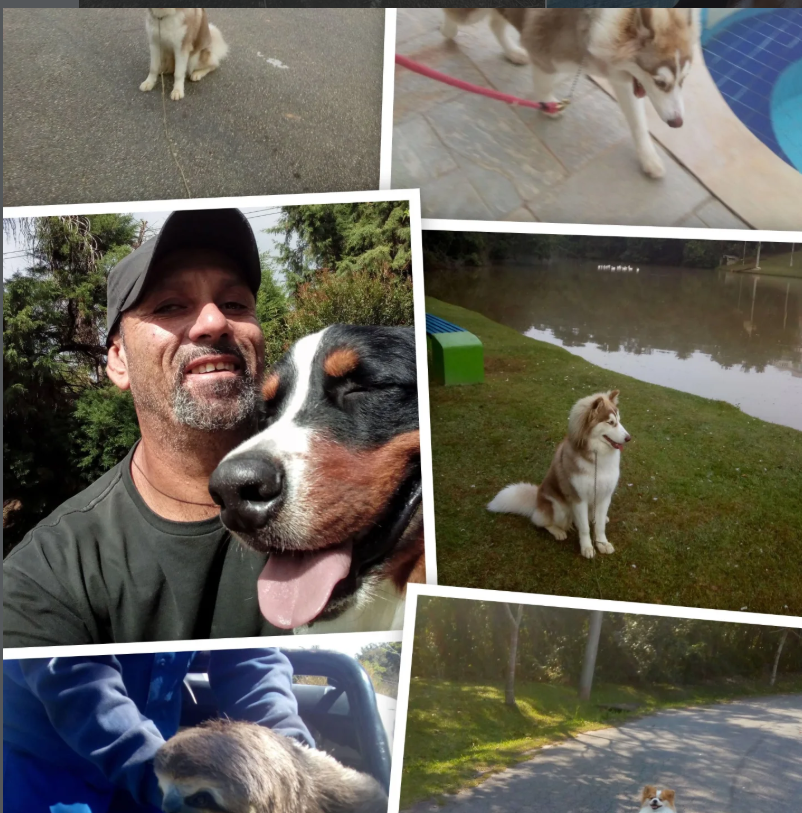

Sheik Adestramento · desde 1988
Formação de adestradores, comportamento canino, cães de guarda e proteção, hospedagem, venda e locação — sob a mesma estrutura que já formou mais de 1.500 profissionais e treinou mais de 5.000 cães.
Desde 1988
A Sheik Adestramento não nasceu de uma tendência de mercado. Nasceu da convivência diária com cães, de tentativa, ajuste e repetição, ao longo de mais de três décadas de trabalho contínuo. É esse tempo — não um discurso comercial — que sustenta cada método aplicado aqui hoje.
Ensinar comandos é apenas a parte visível do trabalho. Por trás dela existe leitura de comportamento, entendimento de temperamento, adaptação a cada finalidade e uma estrutura pensada para sustentar isso em escala: cães de companhia, cães de trabalho, e as pessoas que aprendem a conduzi-los.

Adestrador e Professor
Um profissional que transita, com a mesma naturalidade, entre o cão que precisa aprender a andar na guia e o cão preparado para atuar em um ambiente de segurança.
Sua trajetória inclui a passagem pelo treinamento de cães para o canil da Polícia Militar do Estado de São Paulo e experiência ligada ao Corpo de Bombeiros — vivência prática em contextos onde o desempenho do cão precisa ser consistente, não ocasional. Essa mesma exigência técnica é aplicada em segurança patrimonial, pessoal e em eventos, e em cães voltados a ambientes empresariais e industriais, incluindo trabalhos de busca e captura de pessoas ou objetos.
É essa base — construída em cenários de alta exigência — que Marcos Roberto traz também para o dia a dia doméstico: o cão que puxa na guia, que ignora comandos, que não reconhece limites dentro de casa, que se comporta mal durante a alimentação, que morde ou que simplesmente não convive bem com a rotina da família. O olhar técnico é o mesmo; o que muda é o contexto.
Conversar com a equipe →O que a Sheik faz
Os serviços abaixo não são unidades isoladas — todos partem do mesmo método e da mesma equipe, adaptados a cada finalidade.
Cães de companhia
Trabalhar o comportamento de um cão não é impor obediência — é construir comunicação. Uma linguagem comum entre tutor e cão, com limites claros e previsibilidade, é o que transforma o convívio.
A Sheik atua sobre situações concretas do dia a dia: o cão que puxa durante o passeio, que não responde a comandos básicos, que não respeita limites dentro de casa, que apresenta comportamento inadequado durante a alimentação, que morde ou tem dificuldade real de convivência. Cada caso é tratado a partir de leitura de comportamento — não de fórmulas prontas.
O resultado buscado é equilíbrio: um cão que entende seu lugar na rotina da família e um tutor que sabe como sustentar isso no dia a dia.
Falar sobre o comportamento do meu cão →Cães de trabalho
Um cão preparado para atuar em segurança precisa reunir mais do que disposição: presença física constante, sentidos apurados, mobilidade e, acima de tudo, obediência sólida e resposta consistente ao comando.
É esse conjunto que a Sheik desenvolve para atender residências, patrimônio, empresas, indústrias, eventos e situações de segurança pessoal — sempre dentro de protocolos de disciplina e controle, e nunca como um animal deixado à própria reação.
O trabalho é construído caso a caso, conforme o ambiente e a finalidade de cada cliente.
Falar sobre guarda e proteção →Ambientes profissionais
Empresas, indústrias e eventos têm exigências de segurança próprias: fluxo de pessoas, grandes áreas, horários variáveis e patrimônio a proteger. A Sheik desenvolve cães preparados para atuar nesses contextos, complementando — nunca substituindo — os protocolos de segurança já existentes.
Não trabalhamos com promessas absolutas. Um cão bem treinado reduz vulnerabilidades e amplia a percepção do ambiente; ele é parte de uma estratégia de segurança, não uma garantia isolada.
Falar sobre segurança para minha empresa →Duas formas de perceber o ambiente
Uma câmera registra. Um cão treinado percebe e pode reagir fisicamente. Entender a diferença ajuda a decidir onde cada recurso é mais útil — e onde os dois, juntos, formam uma estrutura mais completa.
Nenhum cão é infalível, e nenhuma câmera é dispensável. A questão não é escolher um lado — é entender que monitoramento eletrônico e presença física respondem a necessidades diferentes, e que a combinação dos dois costuma ser mais robusta do que qualquer um isoladamente.
Canil próprio
A Sheik trabalha com a seleção e o preparo de cães das raças Pastor Alemão e Rottweiler, sempre com atenção à finalidade de cada família ou estrutura interessada — companhia, trabalho ou segurança.
Cada animal é acompanhado individualmente antes de qualquer indicação. Para saber sobre disponibilidade e características dos cães do momento, o caminho mais direto é falar diretamente com a equipe.
Consultar cães disponíveis →Para empresas e eventos
Locar um cão de trabalho não é simplesmente emprestar um animal — é sustentar uma operação. Por isso a Sheik acompanha todo o período da locação, cuidando de alimentação e manutenção do cão, e, quando necessário, providenciando substituição para que a atividade do cliente não seja interrompida.
O serviço atende empresas, eventos e operações de segurança patrimonial que precisam de presença canina qualificada por um período determinado, com respaldo técnico da nossa estrutura.
Consultar locação de cães →Antes de decidir
A decisão mais importante não é qual raça é mais bonita — é qual perfil de cão realmente combina com a rotina, o ambiente e o objetivo de quem vai conviver com ele.
Companhia, trabalho ou segurança pedem perfis diferentes.
Cada cão tem um jeito próprio de reagir ao ambiente e às pessoas.
Espaço disponível, tempo de dedicação e ritmo da casa importam tanto quanto a raça.
Um primeiro cão e um cão de trabalho pedem preparos diferentes de quem vai conduzi-lo.
A Sheik ajuda nessa decisão antes mesmo da compra ou da adoção — para que o resultado seja um cão compatível com a vida que ele vai ter, e não apenas com a primeira impressão.
Precisão técnica em busca e detecção
O olfato canino é uma das ferramentas mais precisas disponíveis em um trabalho de campo. A Sheik desenvolve esse potencial de forma técnica, treinando cães para tarefas de busca e localização — de pessoas ou de objetos — dentro de protocolos definidos com cada cliente.
Cada aplicação é construída sob medida, conforme a necessidade apresentada, sem promessas genéricas sobre capacidades ou resultados.
Falar sobre busca e detecção →Enquanto você viaja
A estrutura da Sheik recebe tanto cães de guarda quanto cães de companhia para períodos de hospedagem, com acompanhamento próximo durante toda a estadia — pensada especialmente para os momentos em que o tutor precisa viajar ou se ausentar.
É a mesma equipe que treina os cães da casa que cuida deles durante a hospedagem, o que mantém consistência no manejo e reduz o estranhamento do animal ao ambiente.
Consultar hospedagem →Para quem quer trabalhar com adestramento
Mais de 1.500 alunos já passaram pela formação da Sheik. Não se trata de um curso teórico isolado — é aprendizado ao lado de quem treina cães de verdade, todos os dias, em situações reais.
Base técnica sólida sobre comportamento e treinamento canino.
Contato direto com cães e situações reais dentro da estrutura da Sheik.
Décadas de experiência acumulada, transmitidas de forma direta.
Acompanhamento ao longo da formação, com espaço para aulas individualizadas quando aplicável.
Conclusão da formação com certificação Sheik Adestramento.
Turmas limitadas
Registros da nossa história
Esta área será atualizada com fotos e vídeos de cães treinados, aulas, eventos e da estrutura do canil, conforme novos materiais forem disponibilizados.
Onde estamos
Comportamento, guarda e proteção, formação de adestradores, venda, locação e hospedagem — tudo sob uma única equipe.
Fale com a Sheik no WhatsApp